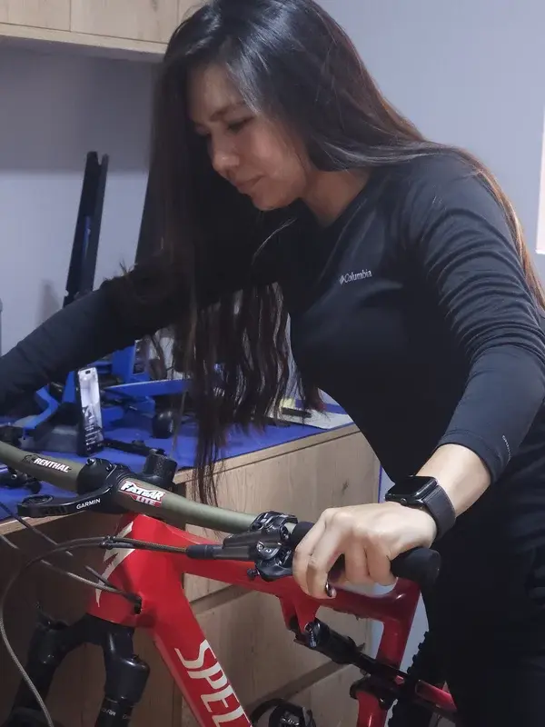
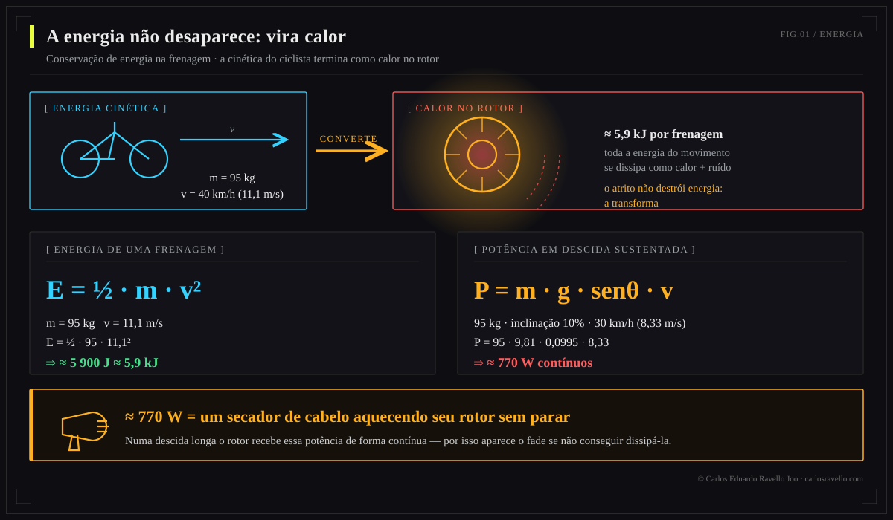
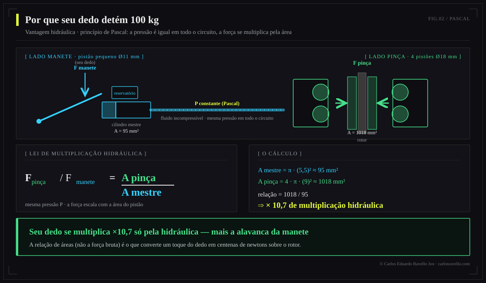
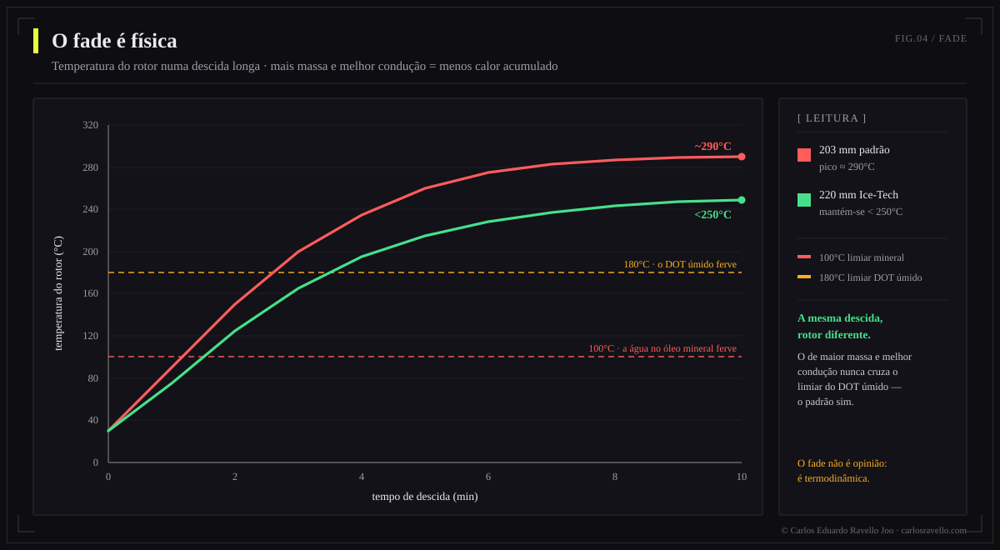
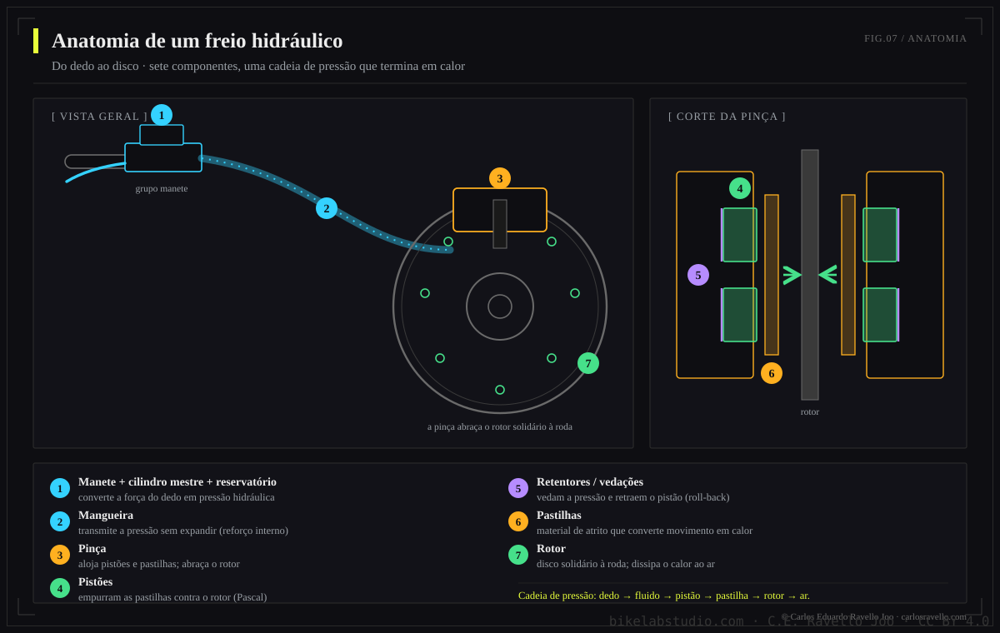
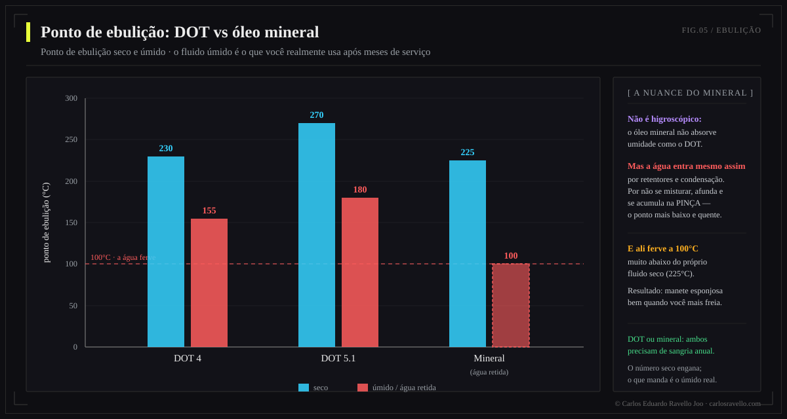
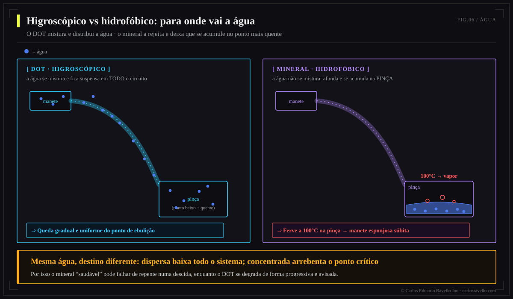
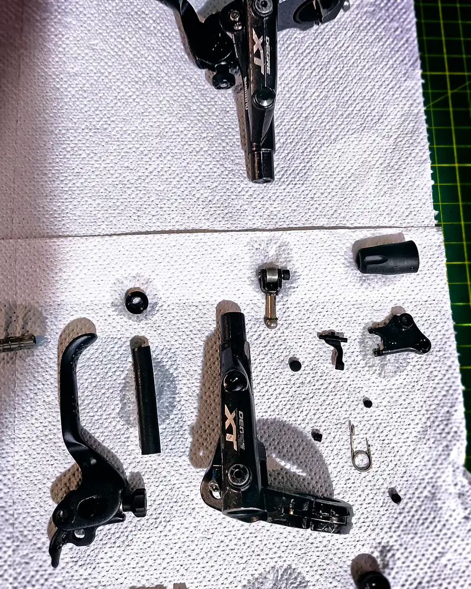
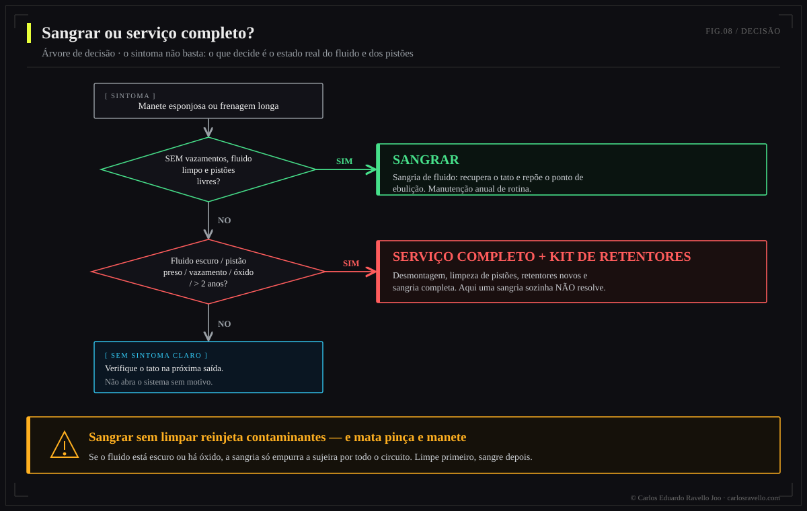
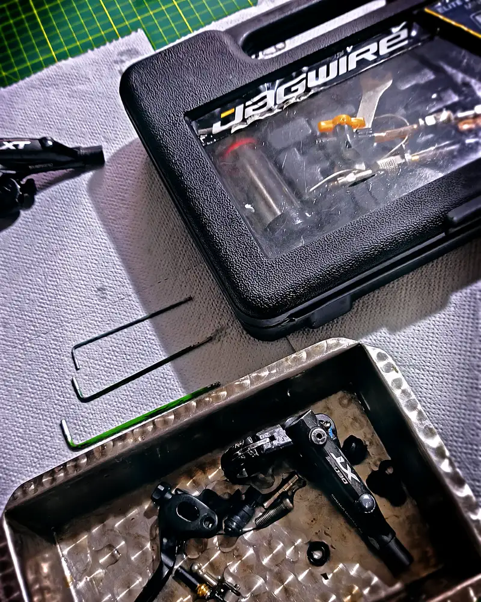

Um freio hidráulico converte a energia do movimento em calor (E = ½·m·v²) e a multiplica com a vantagem hidráulica (Pascal) para te deter com um dedo. Seu calcanhar de Aquiles é o calor (fade) e a contaminação do fluido: o DOT absorve água, o óleo mineral a acumula na pinça. Por isso sangrar não é limpar: se o fluido está degradado, é preciso serviço completo. Em 2025-2026 o mercado deu um salto em potência (Brembo GR-PRO, SRAM Maven, Shimano XTR M9220).
Esta é uma obra de referência, não mais um tutorial. O objetivo é que você entenda por que um freio se comporta como se comporta —com a física na mão— e que tome decisões de fluido, pastilhas, rotores e manutenção sobre evidência e não sobre mitos de fórum. Cada seção pode ser lida solta; juntas formam a referência completa.
- A física da frenagem: energia que vira calor
- Vantagem hidráulica: por que seu dedo detém 100 kg
- O torque e o raio do rotor
- O fade: quando o calor vence
- Anatomia do sistema
- O fluido: DOT vs óleo mineral
- A verdade da sangria: por que sangrar não limpa
- Pastilhas e rotores
- O mercado 2025-2026
- Mitos e verdades
1. A física da frenagem: energia que vira calor

Frear não é "agarrar a roda": é um problema de conservação da energia. A bicicleta e você têm energia cinética por estarem em movimento, e o freio não a destrói —a transforma em calor por atrito entre pastilha e rotor—. Quanto mais rápido você vai, o problema cresce ao quadrado.
O caso temido não é a frenagem pontual, e sim a descida longa: ali o freio dissipa potência de forma sustentada, e a potência térmica é brutal.

2. Vantagem hidráulica: por que seu dedo detém 100 kg
Um líquido é praticamente incompressível e transmite a pressão por igual em todas as direções: é o princípio de Pascal. O freio aproveita isso com duas áreas distintas —um pistão pequeno na manete (cilindro mestre) e pistões grandes na pinça—, multiplicando a força.

3. O torque e o raio do rotor
A força da pastilha atua a uma distância do eixo: o raio do rotor. O torque de frenagem —o que realmente freia a roda— é essa força pelo raio.

4. O fade: quando o calor vence
O fade (perda de potência de frenagem) ocorre quando o sistema gera calor mais rápido do que dissipa. Duas coisas falham: o fluido ferve (seu vapor é compressível → manete esponjosa, "vapor lock") e a pastilha vitrifica. Aqui os limiares importam: a água retida no óleo mineral ferve a 100°C, o DOT úmido perto de 180°C, e uma pastilha orgânica começa a vitrificar por volta dos 300°C.

Numa descida de 10 km, um rotor de 203 mm padrão pode atingir ~290°C, enquanto um 220 mm com núcleo de alumínio (Ice-Tech) se mantém abaixo de ~250°C: a superfície maior e a melhor condução entregam o calor ao ar mais rápido.
5. Anatomia do sistema
Entender as peças é entender onde falha. Da manete ao rotor, cada interface é um ponto de pressão, calor ou contaminação.

6. O fluido: DOT vs óleo mineral
O fluido é o músculo invisível do freio. Há duas famílias quimicamente incompatíveis, e escolher mal —ou misturá-las— arruína os retentores. A diferença chave é como se relacionam com a água.
| Propriedade | DOT 4 | DOT 5.1 | Óleo mineral |
|---|---|---|---|
| Base | Glicol | Glicol | Petróleo refinado |
| Ebulição seco | ~230°C | ~270°C | ~225°C |
| Ebulição úmido | ~155°C | ~180°C | n/a (não absorve) |
| Relação com a água | Higroscópico | Higroscópico | Hidrofóbico |
| Corrosivo / danifica pintura | Sim | Sim | Não |
| Retentores | EPDM | EPDM | Nitrila |
| Troca | 6-12 meses | 6-12 meses | 12-24 meses |
| Marcas | SRAM, Hope, Hayes | SRAM, Hope | Shimano, Magura, TRP |

O paradoxo da água: o DOT a mantém suspensa em todo o circuito (queda gradual do ponto de ebulição), enquanto o mineral a rejeita e a deixa cair ao ponto mais baixo e quente —a pinça—, onde ferve a 100°C e provoca um fade súbito. Nenhum é imune; cada um falha diferente.

7. A verdade da sangria: por que sangrar não limpa
Aqui está a tese que quase ninguém explica: uma sangria simples tira ar e substitui parte do fluido, mas não limpa o sistema. Os sedimentos, a água acumulada, as partículas de retentores desgastados e o fluido oxidado continuam ali. Reinjetar fluido sobre essa contaminação risca pistões, incha retentores e corrói a pinça.

"Se a manete se sente bem após a sangria, o sistema está saudável." Falso. Um sistema pode ter pistões contaminados, retentores degradados e corrosão, e mesmo assim se sentir correto logo após sangrar. O dano segue avançando por dentro.
Quando basta sangrar e quando é preciso serviço completo? A árvore de decisão resolve por sintomas:


Regra de ouro: cada intervenção usa fluido novo. Completar ou reutilizar reintroduz água e partículas e não restaura as propriedades do fluido. O detalhe fino do procedimento por sistema desenvolvemos no nosso guia de sangria de freios.
8. Pastilhas e rotores
A pastilha é a interface onde nasce o calor; o rotor, o dissipador que deve soltá-lo. Escolher composto é escolher um equilíbrio entre mordida, resistência ao calor, ruído e desgaste.


9. O mercado 2025-2026
A frenagem de bicicleta vive seu salto mais potente em anos, impulsionada pelo peso e pela velocidade das e-bikes e da descida. O mais relevante:
| Sistema | Novidade | Por que importa |
|---|---|---|
| Brembo GR-PRO (2026) | Pinça 4×18 mm, óleo mineral próprio, rotores 200-220 mm/2,3 mm, manete com 3 ajustes | A marca da MotoGP entra no MTB; estreia na Copa do Mundo DH com a Specialized Gravity (~€800) |
| SRAM Maven | 4 pistões grandes (18 mm), das mais potentes do mercado | Potência de referência para gravity e e-bike |
| Shimano XTR M9220 (2025) | Novo óleo mineral de baixa viscosidade | Resolveu o "ponto de mordida errante" e o chacoalhar das pastilhas |
| Hope Tech 4 V4 / EVO+GR4 | Mais potência (+~6% o novo EVO), usinagem CNC | Modulação e manutenibilidade de referência |
| TRP DHR Evo / Magura MT7 | Quatro pistões, foco descida/e-bike | Ótima relação potência-valor e feel |
A tendência é clara: pistões maiores, rotores mais grossos, fluidos otimizados e menos obsessão pelo peso em favor da estabilidade térmica.
10. Mitos e verdades
| Mito | Verdade |
|---|---|
| "Mais graxa/fluido = melhor" | O excesso ou o fluido velho não melhora nada; o que importa é fluido novo e limpo, e sem ar. |
| "Sangrar o deixa como novo" | Sangrar não limpa contaminação já instalada; às vezes é preciso serviço completo. |
| "DOT e mineral são intercambiáveis" | Não. Misturá-los destrói os retentores (EPDM vs nitrila). |
| "Apertar mais forte freia mais" | O torque é dado pelo sistema e pelo raio do rotor; superapertar parafusos não adiciona potência. |
| "Pastilha metálica é sempre melhor" | Depende do calor e do terreno; em uso suave, a orgânica morde melhor e é mais silenciosa. |
BikeLab Studio.
Perguntas Frequentes
Por que um freio de bicicleta esquenta tanto?
Porque frear converte energia cinética em calor (E = ½·m·v²). Numa descida de 10% a 30 km/h, um sistema de 95 kg dissipa ~770 W contínuos —como um secador apontando ao rotor sem parar—, e por isso aparece o fade quando o calor supera a dissipação.
O que é melhor, DOT ou óleo mineral?
Nenhum é "melhor": são químicas distintas e não intercambiáveis. O DOT é higroscópico (reduz sua ebulição com o tempo) e tolera mais temperatura; o mineral é estável, mas a água que entra se acumula na pinça e ferve a 100°C. Use o que o seu fabricante pedir e nunca os misture.
Sangrar o freio o deixa como novo?
Nem sempre. Sangrar tira ar e algum fluido, mas não limpa sedimentos, água nem partículas. Se o fluido está escuro, os pistões pegajosos ou há corrosão, é preciso serviço completo com limpeza e, às vezes, kit de retentores.
Pastilhas orgânicas, sinterizadas ou semimetálicas?
Orgânicas: mordida nítida e silenciosas, mas vitrificam por volta dos 300°C. Sinterizadas: aguentam mais calor, ideais para descida/e-bike, com algum ruído e desgaste de rotor. Semimetálicas: o meio-termo.
A Brembo faz freios de bicicleta?
Sim. Em 2026 apresentou o GR-PRO para MTB: pinça de 4 pistões de 18 mm com óleo mineral próprio, rotores 200-220 mm e manete com três ajustes, com herança da MotoGP. Estreou na Copa do Mundo de DH com a Specialized Gravity.
De quanto em quanto tempo se faz serviço num freio hidráulico?
Fluido: DOT a cada 6-12 meses, mineral a cada 12-24. Sangria: quando a manete fica esponjosa. Serviço completo: a cada 1-2 anos em uso intenso, e-bike ou clima úmido, ou ante sintomas de contaminação.
Referências
- BikeRadar — Brake fluid: mineral oil vs DOT.
- Pinkbike — Brembo GR-PRO MTB brake system; Big Brake Test 2026.
- Epic Bleed Solutions — DOT vs mineral oil; degradação e contaminação do fluido.
- BikeRadar — Disc brake pads: organic vs sintered vs semi-metallic.
- ScienceDirect / literatura de engenharia — dissipação térmica de discos e brake fade.
- Manuais de fabricante (Shimano, SRAM, Magura, Hope) — fluidos, torques e procedimentos de sangria.
Precisa saber o que sua bike usa —Post Mount vs Flat Mount, Center Lock vs 6 parafusos, qual rotor encaixa? Está tudo no Cluster Freios da BikeLab-pedia.